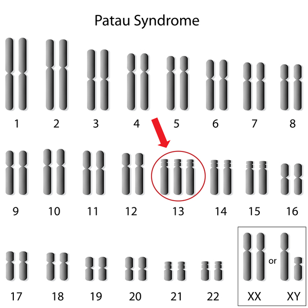
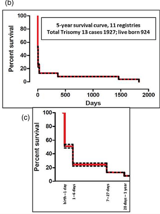

Context for Patau Syndrome and Trisomy 13

Karyotype showing extra chromosome 13

Prenatal imaging
What Is Patau Syndrome?
Patau Syndrome is a condition where someone is born with three copies of chromosome 13 instead of two. The extra genes change normal development and affects most organ system. It was first discovered by Klaus Patau in 1960.
Symptoms
Patau Syndrome presents with a wide range of physical findings, many visible at birth or during prenatal imaging. Common features include:
- Cleft lip and/or cleft palate
- Extra fingers or toes (polydactyly)
- Congenital heart defects, present in up to 80% of cases
- Brain malformations, including holoprosencephaly (brain fails to divide into two hemispheres)
- Small or absent eyes (microphthalmia or anophthalmia)
- Kidney and internal organ abnormalities
- Scalp skin defects (aplasia cutis)
- Low birth weight
- Facial/cranial deformities, small head (microcephaly), small eyes (microphthalmia), and sloping forehead
- Severe intellectual disability, feeding difficulties, seizures, and low muscle tone (hypotonia)
Statistics

Trisomy 13 life expectancy graph
The chances of having a child with Patau Syndrome increase with maternal age, starting at about 1 in 5,000—7,000 and nearly doubling every five years. However, most cases occur in younger mothers due to higher birth rates in that group. Prenatal screening can detect increased risk, and diagnostic tests (CVS or amniocentesis) can confirm the diagnosis before birth. No environmental, hereditary or lifestyle factors have been linked to causing Patau Syndrome; it is a random genetic event during egg or sperm formation.
Treatment Options
Is there a cure?
There is no cure for Patau Syndrome. Because the extra chromosome is present in every cell of the body, it cannot be surgically removed, medically corrected, or genetically modified. Treatment is entirely focused on managing individual symptoms and improving quality of life, similar to other genetic disorders.
Surgical options
Depending on which organs are affected, surgery may be recommended for cleft lip and palate repair, heart defect correction, polydactyly removal, or intestinal malformations. However, surgical decisions depend on the individual case and the overall severity of the condition.
Medical management
- Anti-seizure medications, seizures are common; treatment can help manage them but cannot remove them
- Heart medications, depending on the type of heart defect, if any
- Feeding support, many infants require a nasogastric (NG) tube or a surgically placed gastrostomy tube (G-tube) due to feeding difficulties/impossibilities
- Respiratory support, supplemental oxygen or mechanical ventilation may be required due to facial deformities
Important note: While the majority of infants with Patau Syndrome do not survive past their first year, there are documented cases of children living into their teens and even early adulthood. Survival depends on the severity of symptoms, access to medical care, and individual variability. Each case is unique.
Current Research & Progress Toward a Cure
As of now, no cure for Trisomy 13 exists. Researchers continue to improve surgical outcomes and neonatal intensive care protocols, which have extended survival times over recent decades. Some experimental research is exploring chromosomal silencing techniques, similar to approaches being studied for Trisomy 21 (Down Syndrome), but these remain in early stages and are not yet clinical treatments.
Assistive Technologies & Products
For children with Patau Syndrome who survive infancy, several technologies can support daily functioning:
- AAC devices, Augmentative and Alternative Communication tools for nonverbal children (e.g., Tobii Dynavox, PRC Accent)
- Feeding equipment, Specialized bottles, NG tube kits, G-tube systems
- Hearing aids, for children with hearing loss
- Visual aids, corrective lenses, magnifiers, or low-vision tools for vision loss/deformities
- Seizure monitoring, wearable alert devices to alert caregivers/people nearby (e.g., Empatica Embrace)
- Adaptive mobility, custom strollers, orthotics, or wheelchairs, as physical deformities may limit movement options